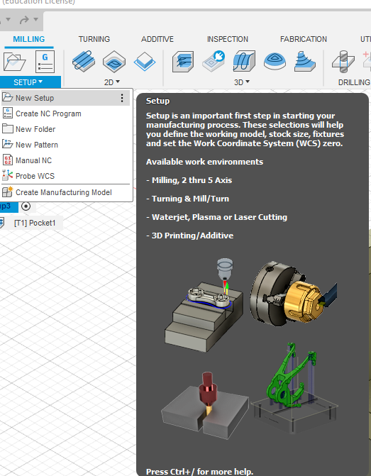

This will be showing you how I do my molding and casting assignment
First we need to download Stepcraft's post processor, we go here and search for stepcraft, then download the first search result.
We will use fusion 360 to design the mold.
I first sketch a polygon using the "inscribed polygon".
After drawing out the polygon, I extrude it and then rotated it in an angle to get a slopped look.

Next I use the "centre rectangle" to draw the bottom rectangle and extrude it.


Then I draw the walls and extrude them to same thickness as the bottom.


After designing, the finished product is as shown.

Now we go from "design" to "manufacture" so we can generate the gcode.
Now we create a new setup and choose pocket chearing and set the settings.
After dealing with the settings, we can start to use a post processor to generate the gcode for the machine to cut.
choose use personal post library and copy the directory, then inside it, paste the downloaded file into it, now you can choose it for your post processor.
click on setup and select "use personal post library, and copy the directory
Then in file explorer, paste the link to go into the file and paste the downloaded post processor inside it
After that is pasted, you can choose the stepcraft machine as the machine to use for cutting the mold. And after that, just post it.
Once it is all done, click post and the gcode is generated.
After you got your gcode, you can use ncviewer to see your toolpath and you can head to the machine to proceed to cut.
For molding, you will need to use a 3.0mm bit instead of the PCB milling's 0,4 and 0.8mm bits
For cutting the foam, you cannot use the probe to set the z axis, instead, you will need to move the machine drill to the center and let the drill bit touch the foam and zero the x, y and z axis.

Now we can start the drill and proceed to cut.
Cutting the foam creates a lot of dust, so it is important to vacuum very frequently, or place the vacuum beisde the cutting area and let it continue to run.
After cutting the foam, you can start to use it to create the mold.
For the mold, I will be using silicone, in fablab there are 2 different brands, easymold and smooth on, I am using smooth on.

the datasheet is in this PDF: Smooth on datasheet.
For the mold you can use mold release to allow for easier removal of the mold after it sets.

For the silicone, mix it according to the amount instructed. once it is mixed, you have to work quick before it starts to set, once it is mixed properly, you canc start to pour it in the foam.

After it is poured, there will be some air trapped inside, for thtat we need to put it in the vacuum chamber. once they are in the chamber, you can start to turn on the compressor to suck out the air.

After removing the air, you can leave it alone for it to set up.

When the silicone is set, you can remove the foam around it as we do not need it anymore. And now we can start with casting it in resin.
Mix the resin in a 3:1 ratio of resin to hardener and while it is still in the cup, put it in the vacuum chamber to remove the air, the reason why we do it in the cup instead of in the mold is because as the air is being pushed out, the resin will also get pushed out, this will cause it to leak out and spill over.
After the air is removed, just pour it in the mold and leave it to harden, I left it until the next week.
Once the resin is fully hardened and cured, you can just pull it out of the mold, the mold now can be reused if you wish to make more.
In this assignment, I realised that the shape I designed is too shallow, and this is reflected on the mold and cast as if I pour too much in the mold, it would spill over and the cast has a weird leaked out area. So next time I would need to deisign it deeper.